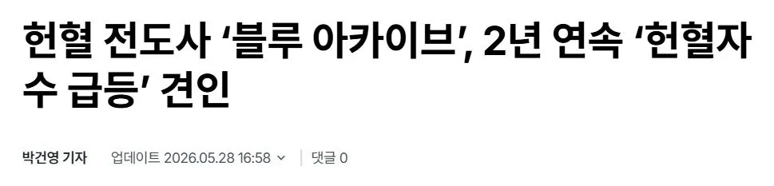

28 · 14 · 9 분 전 · 원문

효과가 확실함
수집 당시 댓글 14개
이천왓치 · 27 분 전
오나너본지꽤된듯 · 26 분 전
성병 가능성 제로
베댓전문가 · 26 분 전
음식 콜라보로 살찌우고
마라톤 개최해서 운동시키고
헌혈 프로모션으로 피 빼고
돈 내고 투구게 사육당하는www
↳ 답글 · YouTubecom · 14 분 전
K조선 센세들은 투구게인것인? WWWWW
StereoDepth · 25 분 전
alt 검사도 폐지해서 돼지들 피 미친듯이 뽑아낼 수 있따구요
↳ 답글 · 그까이꺼대충 · 1 분 전
읭? 그거 해주지않나?
하고 앱 들어가보니까 5월까지만 있었네 ㅋㅋㅋ
Hitomi · 23 분 전
안전하고 깨끗한 피
q1w2e3r4t5 · 19 분 전
찌우고 피빼고 찌우고 피빼고
아라그니아 · 18 분 전
트릭컬은 피뽑기 이벤트 안하나
오늘도야근이다 · 14 분 전
덕후들은 딴짓을 안해서 피가 안전할 확률이 높아서 좋다라고 하는 말이 생각나요 ...
craken · 10 분 전
오타쿠들 살쪄서 고지혈증 당뇨있어서 헌혈 못하는거아님?
↳ 답글 · 년후특이점이온다 · 8 분 전
그런애들은 문 사이즈 때문에 헌혈하러 못나갔대
↳ 답글 · 비나비 · 2 분 전
마운자로 생기고 나서 많이 줄어들고있음
오히려 운동하기 싫어하는 애들이라 현질로 관리 가능해져서 좋아 함
마코토 · 6 분 전
성병 제로 ㅋㅋㅋ
댓글
수집 당시 댓글 14개
이천왓치 · 27 분 전
오나너본지꽤된듯 · 26 분 전
성병 가능성 제로
베댓전문가 · 26 분 전
음식 콜라보로 살찌우고
마라톤 개최해서 운동시키고
헌혈 프로모션으로 피 빼고
돈 내고 투구게 사육당하는www
· YouTubecom · 14 분 전
K조선 센세들은 투구게인것인? WWWWW
StereoDepth · 25 분 전
alt 검사도 폐지해서 돼지들 피 미친듯이 뽑아낼 수 있따구요
· 그까이꺼대충 · 1 분 전
읭? 그거 해주지않나?
하고 앱 들어가보니까 5월까지만 있었네 ㅋㅋㅋ
Hitomi · 23 분 전
안전하고 깨끗한 피
q1w2e3r4t5 · 19 분 전
찌우고 피빼고 찌우고 피빼고
아라그니아 · 18 분 전
트릭컬은 피뽑기 이벤트 안하나
오늘도야근이다 · 14 분 전
덕후들은 딴짓을 안해서 피가 안전할 확률이 높아서 좋다라고 하는 말이 생각나요 ...
craken · 10 분 전
오타쿠들 살쪄서 고지혈증 당뇨있어서 헌혈 못하는거아님?
· 년후특이점이온다 · 8 분 전
그런애들은 문 사이즈 때문에 헌혈하러 못나갔대
· 비나비 · 2 분 전
마운자로 생기고 나서 많이 줄어들고있음
오히려 운동하기 싫어하는 애들이라 현질로 관리 가능해져서 좋아 함
마코토 · 6 분 전
성병 제로 ㅋㅋㅋ